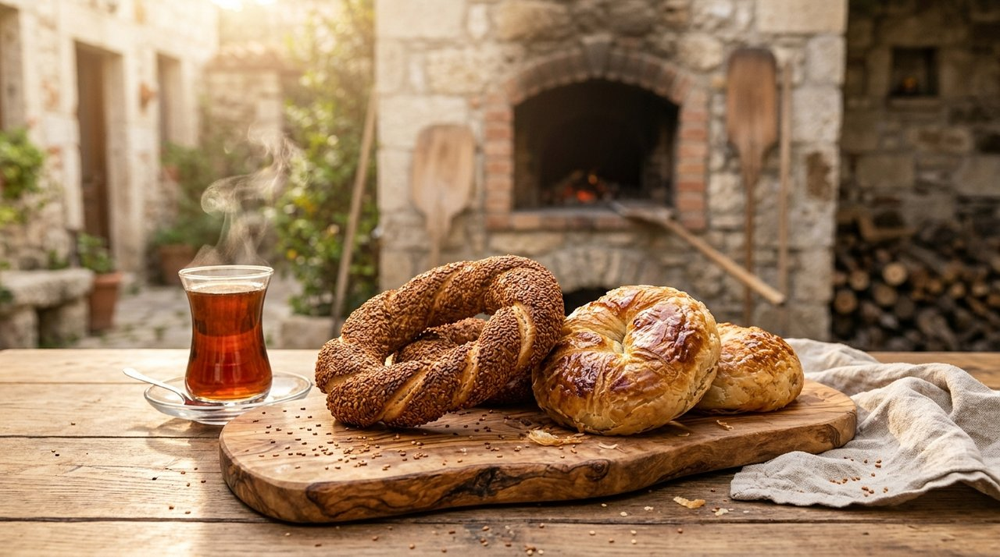
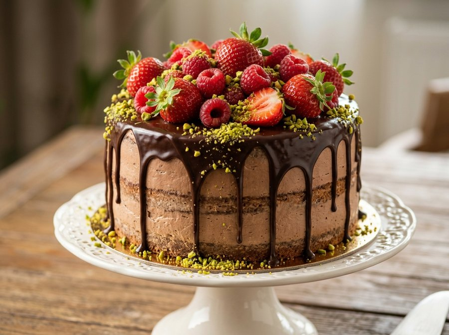

Yarım Asırlık Gelenek.
Foça'nın tarihi sokaklarında ve Bağarası şubemizde, usta ellerden çıkan sıcacık İzmir boyozu, çıtır susamlı gevrek, taptaze kuru pastalar ve doğal dondurma lezzetleriyle güne başlayın.
İmza Lezzetlerimiz
Kategoriler
Usta Ellerden Çıkan Geleneksel Tarifler
Yılların verdiği tecrübe ve geleneksel tariflerimizle hazırladığımız unlu mamullerimiz, Foça'nın ve Bağarası'nın vazgeçilmezi olmaya devam ediyor.
İşletmemiz en taze ve sıcak ürünleri sunabilmek adına Self Servis konseptiyle hizmet vermektedir. Kürekten yeni inen çıtır İzmir gevreği, kat kat açılan gerçek İzmir boyozu, fırınlanmış sıcak yumurta ve taze demlenen çayımızla sabahın ilk ışıklarından gece yarısına kadar yanınızdayız.
Doğum Günleri ve Kutlamalar İçin Özel Yaş Pastalar
Özel günleriniz, kutlamalarınız ve davetleriniz için günlük taze malzemelerle usta işi yaş pastalar ve toplu siparişler hazırlıyoruz.
